User Guide
Welcome to the HTM252: PM Toolkit Labs! This guide is designed to help you navigate through the various labs included in this course.
Getting Started
Tips for Success
If you have questions, reach out to your instructor or refer to the course materials. Happy learning!
Session 1: Placeholder
Session 2: Project Management with Microsoft Excel
Scenario
You are supporting a technology implementation project. In this first section, you will use Excel to connect information within a workbook and implement features that help to visualize project information.
Part 1: Review the Project Information and Assign Tasks (15 Minutes)
-
Open the Excel file Technology Implementation Project. The workbook contains the following worksheets:
- Dashboard
- Tasks
- Timeline
- Resources
- Team Members
- Budget
- On the Tasks worksheet you’ll see project activities that need ownership assignments. You’ll assign these using a drop-down list of project roles. To do this, start by selecting the blank cells under the Assigned To heading.
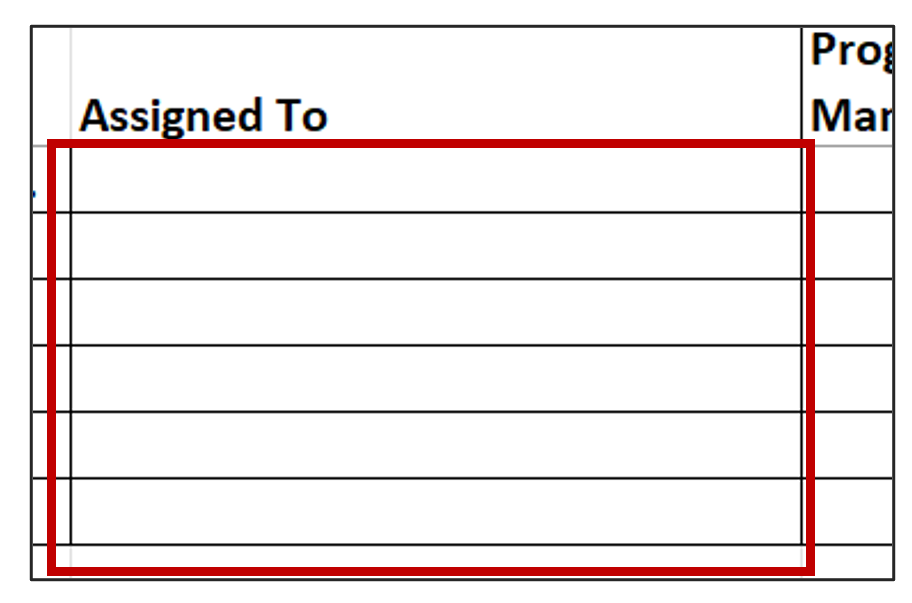
- With those cells selected, navigate to the Data tab on the Excel toolbar and click on Data Validation in the Data Tools section.
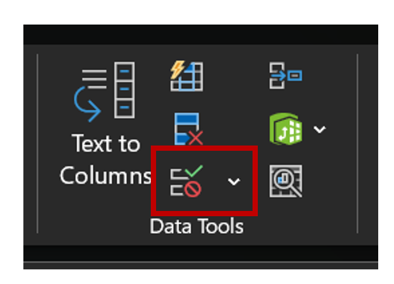
- In the Data Validation dialog, select List from the Allow drop-down.
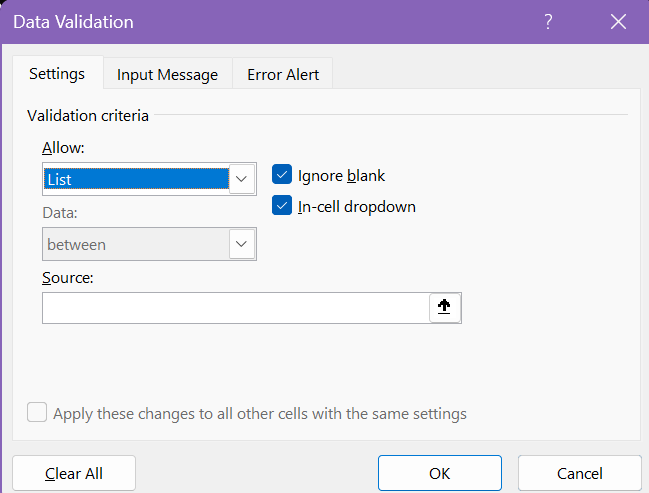
- Click in the Source field. Keeping the Data Validation dialog open, navigate to the Roles worksheet of the workbook and select the cells under the Role header. The Source field populates with the cells you’ve selected.
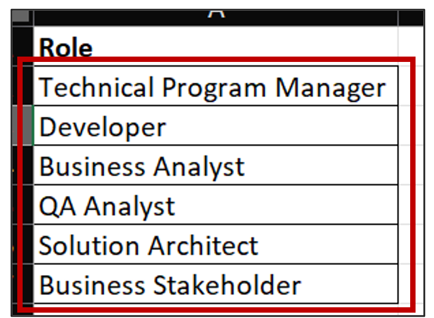
- Click OK.
- On the Tasks worksheet, the cells under Assigned To now have a drop-down list of roles. For each task, select a role to assign the task to.
Part 2: Complete the RACI Matrix (15 Minutes)
To add more nuance to the task assignments, let's create a RACI Matrix.
-
For the columns under the roles in the project tasks table, repeat the steps above to create a new drop-down list. For this list, the source data will be the first column of the RACI definitions table (also on the Tasks worksheet).
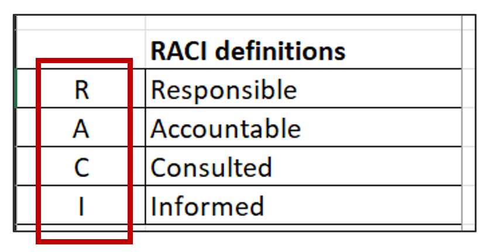
-
For each task, assign a RACI rating for each project team member using the guidance below.
RACI Definitions:
- R = Responsible (Performs the work)
- A = Accountable (Ultimately owns the outcome)
- C = Consulted (Provides input before decisions)
- I = Informed (Kept updated on progress)
- Set a status for each task using the same method of creating a drop-down list in the Status column. For the source data of this, use the Task Status table on the Tasks worksheet.
- Apply conditional formatting to automatically change the cell color of the task’s status. To do this, select the cells in the Status column and navigate to the Home tab in the Excel toolbar. In the Styles section, click on Conditional Formatting and select New Rule from the drop-down menu.
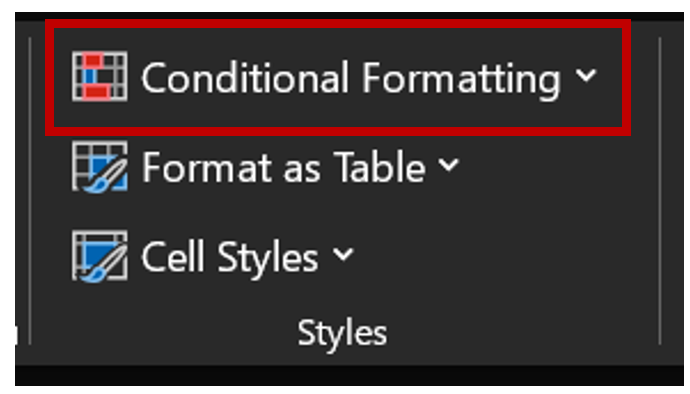
- In the New Formatting Rule dialog, select Format only cells that contain. In the Edit the Rule Description section, select Specific Text from the first drop-down menu and type Completed in the text field. Click the Format button.
- In the Format Cells dialog, click on Color and select green as the cell fill. Click OK on both the Format Cells dialog and the New Formatting Rule dialog.
- Repeat the above steps so the status In Progress turns the cell fill yellow and the Not Started status tuns the cell fill red.
Part 3: Validation Questions (10 Minutes)
Answer the following:
- Which role was most frequently assigned as Accountable?
- Which project task required the greatest number of Consulted participants?
- Why is it important to have only one Accountable role per task?
- What project risks could occur if responsibilities are not clearly defined?
Part 4: Date Validation Questions (15 Minutes)
Please complete the following additional activities:
- In the Depends On column, create a drop-down list from the project tasks and select a dependency for each task that depends on another task. Add the Dependency Type in the next column.
- Add a start and end date for each task.
- Use the DATEDIF function to automatically show you the length of each task. the In the first line of the table, under Length, enter the following: =DATEDIF(K2,L2,"d")
- (The equal sign at the beginning tells Excel you’re entering a formula. DATEDIF is a formula that shows the time difference between two dates. Inside the parentheses, the first two values are the cells you want the formula to calculate from, and “d” indicates you want the number in days.)
- Click on the cell you entered the formula in and hover over the lower right corner until a plus sign appears, then click and drag down the column to repeat the formula for the rest of the table.
- In the % Complete column, enter a value for each task, typing the % sign after the number. On the Home tab in the Excel toolbar, click on Conditional Formatting, then hover over Data Bars. Select either Solid Fill or Gradient Fill and a color.
Session 3: OneNote Foundations for Project Organization
Scenario
You have recently joined a project team responsible for implementing a new enterprise software solution for a healthcare organization. Your project manager has asked you to create and organize a OneNote notebook that will serve as the project's central repository for documentation, requirements, meeting notes, and project planning information.
You will create the project notebook, organize project content, and implement information management techniques that support project execution.
Part 1: Create and organize a OneNote Notebook (10 Minutes)
Create a New Notebook
- Open Microsoft OneNote.
- Select File > New.
- Create a new notebook name: Enterprise Software Implementation Project.
- Save the notebook to OneDrive.
Create Sections
Create the following notebook sections.
- Project Overview
- Requirements
- Meetings
- Risks & Issues
- Training
Create Pages
Create the following pages.
| Section | Pages |
|---|---|
| Project Overview | Project Charter |
| Stakeholder List | |
| Requirements | Functional Requirements |
| Technical Requirements | |
| Meetings | Kickoff Meeting Notes |
| Risks & Issues | Risk Register |
| Training | Training Plan |
Part 2: Use and Adapt Templates (5–7 Minutes)
Apply a Template
- Navigate to the Kickoff Meeting Notes page.
- Select Insert > Page Templates.
- Choose a meeting notes template.
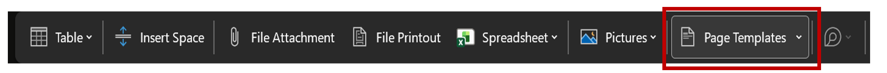
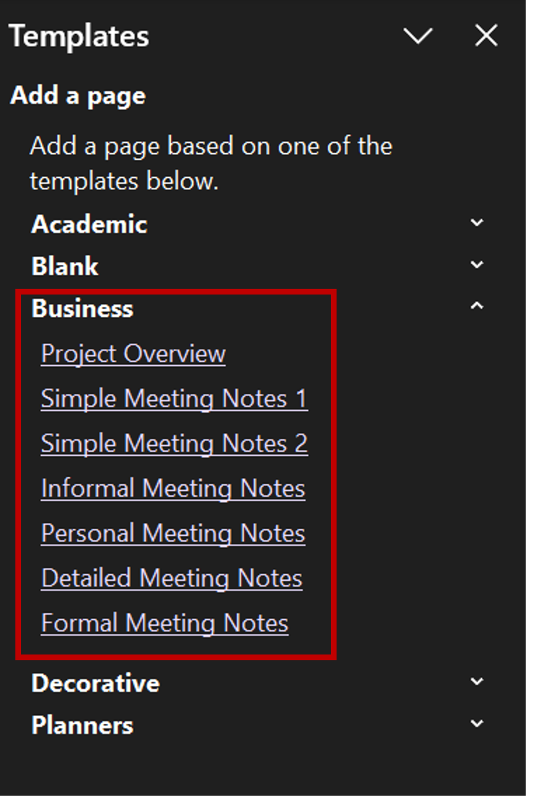
Customize the Template
Modify the template to include:
- Meeting Date
- Attendees
- Objectives
- Action Items
- Decisions Made
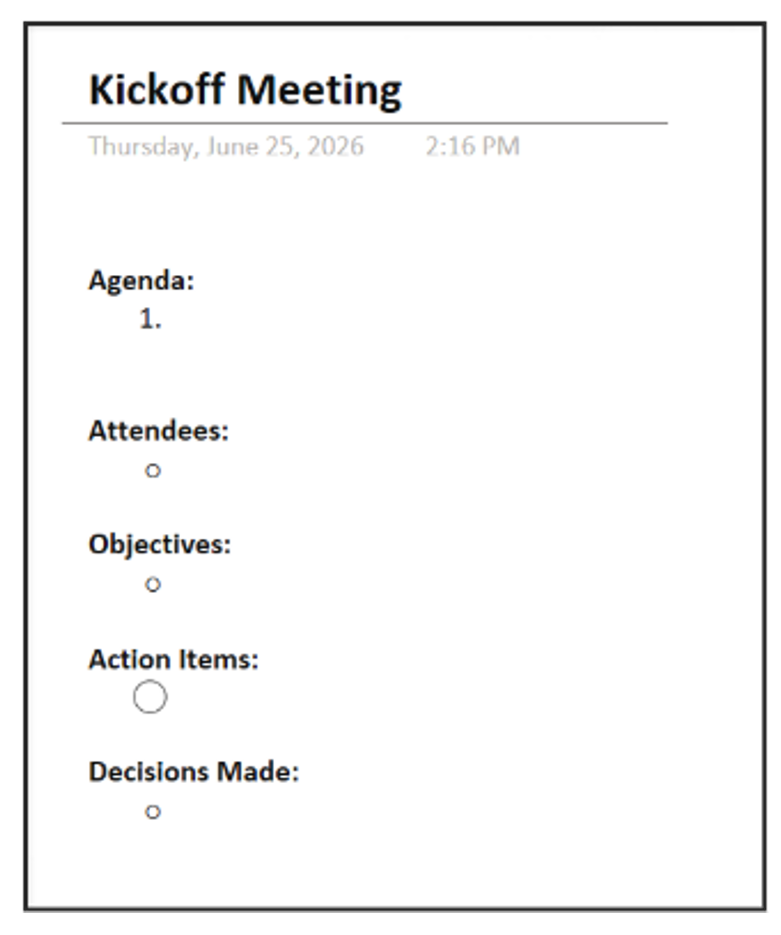
Save Your Changes
Add sample project information to each section of the template.
Part 3: Apply Tags and Organize Information (5–7 Minutes)
Add Sample Action Items
Under the Kickoff Meeting Notes page, add:
- Gather stakeholder requirements
- Complete system design
- Schedule training sessions
- Review project risks
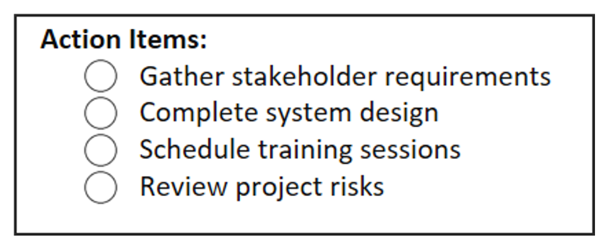
Apply Tags
| Task | Suggested Tag |
|---|---|
| Gather stakeholder requirements | To Do |
| Complete system design | Important |
| Schedule training sessions | To Do |
| Review project risks | Question |
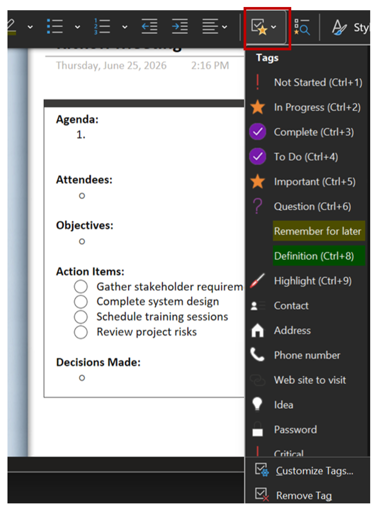
Search by Tag
- Select Home > Find Tags.
- Review the tagged items generated by OneNote.
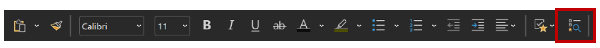
Session 4: Project Management in Microsoft Teams Lab
Scenario
You have been assigned as the Technical Program Manager for a healthcare technology implementation project. Your first responsibility is to establish a Microsoft Teams workspace where project team members can collaborate, share documents, track project information, and conduct meetings.
Your team includes:
- Technical Program Manager
- Business Analyst
- Solution Architect
- Developer
- QA Analyst
- Business Stakeholder
You will create a Team, organize channels, assign permissions, share project documentation, and integrate project management tools.
Part 1: Create a Project Team (5 Minutes)
Step 1: Open Microsoft Teams
- Launch Microsoft Teams.
- Select Teams from the left navigation pane.
- Click Join or Create a Team.
- Select Create Team.
Step 2: Create a Team Using Class Participants
- Select From Scratch or use your instructor's preferred method.
- Choose Private Team.
- Name the Team Healthcare Technology Implementation Project.
-
Add the following participants (or classmates assigned by your instructor):
- Business Analyst
- Solution Architect
- Developer
- QA Analyst
- Business Stakeholder
Step 3: Verify Team Creation
Confirm that all participants appear in the Team member list.
Part 2: Create and Organize Channels (5 Minutes)
Step 1: Create Project Channels
Within the Team, create the following channels:
| Channel Name | Purpose |
|---|---|
| General | Team-wide announcements |
| Project Planning | Schedules, timelines, milestones |
| Requirements | Business and technical requirements |
| Testing & QA | Testing activities and defect tracking |
| Project Risks | Risk management and issue discussions |
Step 2: Add Channel Descriptions
For each channel:
- Select the channel settings.
- Add a brief description explaining its purpose.
Part 3: Configure Permissions and Access (5 Minutes)
Step 1: Review Team Roles
Navigate to:
Team Settings > Manage Team
Review the difference between:
- Owners
- Members
- Guests
Step 2: Assign Permissions
Configure permissions as follows:
| Role | Permission Level |
|---|---|
| Technical Program Manager | Owner |
| Business Analyst | Member |
| Solution Architect | Member |
| Developer | Member |
| QA Analyst | Member |
| Business Stakeholder | Guest |
Step 3: Modify Member Permissions
Review settings for:
- Creating channels
- Deleting channels
- Adding tabs
- Posting messages
Document any changes made.
Part 4: Share Project Documentation (5 Minutes)
Step 1: Upload a Project Document
In the Project Planning channel:
- Select the Files tab.
- Upload a document named Project Charter.docx. Use any sample Word documnet.
Step 2: Collaborate on the Document
- Open the uploaded document.
-
Add the following information:
- Project Name
- Project Goal
- Target Go-Live Date
- Key Stakeholders
Step 3: Review Co-Authoring Features
Observe:
- Shared editing
- Version history
- Automatic saving
Part 5: Project Management Using Teams (5 Minutes)
Step 1: Create a Project Status Post
In the Project Planning channel, create a post containing a Project Status Update:
- Current Status: On Track
- Next Milestone: Requirements Review
- Risks Identified: None
- Upcoming Meeting: Project Kickoff
Step 2: Tag Team Members
Mention at least two team members using the @mention feature.
Step 3: Pin Important Content
Pin the Project Status Update to the channel.
Part 6: Integrate OneNote and SharePoint (5 Minutes)
Step 1: Add a OneNote Notebook
- Select the + (Add Tab) button.
- Choose OneNote.
- Create or link a notebook named Project Management Notebook.
Step 2: Create a Meeting Notes Page
Add a page titled: Project Kickoff Meeting Notes
Include:
- Attendees
- Objectives
- Action Items
- Decisions
Step 3: Access SharePoint
- Navigate to the Files tab.
- Select Open in SharePoint.
- Review the project document library.
Step 4: Identify SharePoint Benefits
Record at least three benefits of using SharePoint with Teams.
Examples:
- Centralized document storage
- Version control
- Permission management
- File recovery
Reflection Questions
- How do Teams channels improve project communication?
- Why is permission management important for project collaboration?
- What advantages does document sharing provide compared to email attachments?
- How does OneNote support project management activities?
- What role does SharePoint play within Microsoft Teams?
- Which Teams feature do you believe is most valuable for project managers and why?
Session 5: Communication Skills for Project Managers
Scenario
You are serving as the Program Manager for a healthcare technology implementation project for the VA. The project team is responsible for deploying a new patient scheduling system within six months. The project is now entering Month 5 with one month remaining until go-live.
The Scope Creep Situation
Yesterday afternoon, Dr. Linda Harmon, the Deputy Chief Medical Officer and a key business stakeholder, attended a healthcare innovation conference. She returned with an urgent request: she wants the new patient scheduling system to include real-time integration with the pharmacy management system so that appointment confirmations automatically trigger medication refill reminders to patients.
Dr. Harmon sent an email this morning marked "High Priority" stating:
"This integration is critical for patient safety and will dramatically improve medication adherence. I've already mentioned this enhancement to the Regional Director, and she's very excited about it. We need to include this in the initial launch. I'm confident the technical team can make this work—it's just connecting two systems."
It's important to note that this was not in the original contract and has not been considered when original staffing, budget, and timeline were considered.
Current Project Status:
- The project is 4 weeks from go-live
- User acceptance testing (UAT) begins in 10 days
- The team has just completed integration testing for the currently scoped features
- The project is currently on schedule and within budget
Challenges to Navigate
- Scope creep request: Dr. Harmon's pharmacy integration request was never part of the original project scope, requirements, or approved budget.
- Stakeholder pressure: Dr. Harmon has already set expectations with the Regional Director, creating political pressure to accommodate the request.
- Timeline risk: Adding this functionality could delay go-live by 6–8 weeks and require additional funding.
- A critical resource has been reassigned: Your lead integration developer was just pulled to support an emergency system outage on another project and won't return for two weeks.
- Team confusion: Dr. Harmon has already reached out directly to two developers on your team asking them to "start looking into" the pharmacy integration, creating confusion about priorities.
- Leadership expectations: The Business Stakeholder expects a status update tomorrow and has no awareness of this new request.
Part 1: Develop a Stakeholder Communication Plan (5 Minutes)
Step 1: Review Stakeholder Groups
Identify the following stakeholders:
| Stakeholder | Role | |
|---|---|---|
| Business Stakeholder | Project funding and oversight | |
| Clinical Leadership | End-user representatives | |
| Technical Team | System implementation | |
| Project Team | Daily project execution | |
| End Users | Future system users |
Step 2: Determine Communication Frequency
Complete the table below:
| Stakeholder Group | Communication Frequency | Method |
|---|---|---|
| Business Stakeholder | ||
| Clinical Leadership | ||
| Technical Team | ||
| Project Team | ||
| End Users |
Step 3: Determine Communication Content
For each stakeholder group, consider:
- Information needed
- Level of detail required
- Preferred communication method
Part 2: Responding to Scope Creep (10 Minutes)
Assess the Scope Change Request and Respond
Before responding to Dr. Harmon, analyze the request:
- Is this in the original scope?
- What is the estimated impact on timeline?
- What is the estimated impact on budget?
- What resources would be required?
- What are the risks of accommodating?
- What are the risks of declining?
Write a professional email response to Dr. Harmon that:
- Acknowledges the value of her idea
- Explains the change management process without being dismissive
- Clearly communicates timeline and resource implications
- Offers alternatives (e.g., Phase 2 implementation)
- Proposes next steps
Your Draft Email:
Part 3: Communicating Outside of Meetings (5 Minutes)
Scenario
A stakeholder requests an update, but the next scheduled meeting is two weeks away.
Step 1: Select an Appropriate Communication Method
Choose one:
- Teams Chat
- Phone Call
- Project Dashboard
- Status Report
Step 2: Draft a Brief Update
Include:
- Current project status
- Recent accomplishments
- Upcoming activities
- Risks or concerns
Question: When is asynchronous communication more effective than scheduling a meeting?
Part 4: Running an Effective Project Meeting (5 Minutes)
Scenario
You are facilitating a weekly project status meeting.
Step 1: Build a Meeting Agenda
Create an agenda that includes:
- Project Status
- Milestone Review
- Risks and Issues
- Action Items
- Open Discussion
Step 2: Identify Questions You Need Answered
List at least three questions you need from attendees to keep the project moving.
Example:
- Are all assigned tasks on schedule?
- Have any new risks emerged?
- Are additional resources needed?
Part 5: Influence Without Authority (5 Minutes)
Scenario
A Developer is assigned to complete a critical task but has shifted focus to another project. You do not directly supervise this individual.
Step 1: Choose an Influence Strategy
Select one:
- Building relationships
- Explaining project impact
- Negotiating priorities
- Escalating to leadership
- Seeking stakeholder support
Step 2: Create a Communication Plan
Document:
- Who you will speak with
- Key message
- Desired outcome
Question: What are the advantages of influencing through collaboration rather than authority?
Part 6: Clarifying Responsibilities and Timelines (5 Minutes)
Scenario
Several project tasks have unclear ownership.
Step 1: Review the Task List
- Requirements Validation
- System Configuration
- User Acceptance Testing
- Training Development
- Go-Live Approval
Step 2: Assign Responsibility
For each task:
- Identify the most appropriate owner.
- Define the target completion date.
- Document any dependencies.
Step 3: Establish a Common Understanding
Prepare a summary statement that includes:
- Task ownership
- Expected timelines
- Success criteria
Session 6: Project Management Closeout Lab
Scenario
You are the Technical Program Manager for a healthcare technology project that is nearing completion. The organization is preparing to transition the system to operational support teams. Throughout the project, documentation has been stored across multiple tools including Teams, OneNote, SharePoint, Excel, and email. Leadership has requested a final review of project documentation before approving project closure.
Part 1: Assess Current Project Documentation (5 Minutes)
Step 1: Identify Documentation Tools -- Complete the following table:
| Tool | Purpose | What information is stored there? | What challenges exist within each tool? |
|---|---|---|---|
| Microsoft Teams | |||
| OneNote | |||
| SharePoint | |||
| Excel | |||
Part 2: Identify Common Documentation Pitfalls (5 Minutes)
Scenario
The project team reports the following issues:
- Documents are stored in multiple locations.
- Several versions of the same file exist.
- The ownership of documents is unclear.
- Meeting decisions are difficult to locate.
- Maintenance staff have limited project knowledge.
Step 1: Match the Issue to the Pitfall
Complete the table:
| Issue | Documentation Pitfall |
|---|---|
| Multiple file versions | |
| Missing ownership | |
| Information scattered across tools | |
| Missing meeting records | |
| Lack of operational knowledge transfer |
Step 2: Recommend Improvements
For each pitfall, recommend a best practice solution.
Part 3: Apply Documentation Best Practices (5 Minutes)
Step 1: Establish Documentation Standards
Define standards for:
- File naming conventions
- Version control
- Document ownership
- Storage location
- Approval process
Part 4: Prepare Project Closeout Documentation (5 Minutes)
Scenario
Leadership has approved project completion pending final documentation.
Step 1: Create a Project Closeout Report Outline
Include:
- Project Overview
- Project Objectives
- Deliverables Completed
- Budget Summary
- Schedule Performance
- Risks and Resolutions
- Lessons Learned
- Stakeholder Sign-Off
Step 2: Document Lessons Learned
Identify:
- One success
- One challenge
- One recommendation for future projects
Step 3: Obtain Project Sign-Off
Determine which stakeholders should approve project closure.
Examples:
- Business Stakeholder
- Project Manager
- Business Owner
- Operations Manager
Part 5: Create a Maintenance and Operational Handoff Package (5 Minutes)
Scenario
The project is transitioning to an operational support team.
Step 1: Create a Handoff Checklist
Include:
- System Documentation
- User Guides
- Support Procedures
- Maintenance Schedule
- Escalation Procedures
- Known Issues Log
Step 2: Assign Ownership
Complete the table:
| Deliverable | New Owner |
|---|---|
| Maintenance Procedures | |
| User Support | |
| System Updates | |
| Incident Management | |
| Vendor Coordination |
Step 3: Verify Knowledge Transfer
Identify activities that should occur before project closure:
- Training sessions
- Documentation review
- Operational walkthrough
- Support readiness assessment
Reflection Questions
- Why is project documentation critical to project success?
- What risks occur when documentation is incomplete or poorly organized?
- Which documentation tools were most effective and why?
- How can version control improve project outcomes?
- Why are lessons learned valuable for future projects?
- What information is essential for a successful operational handoff?
- How does effective project closure contribute to long-term organizational success?